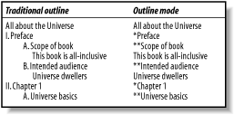
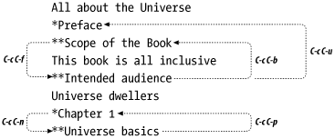
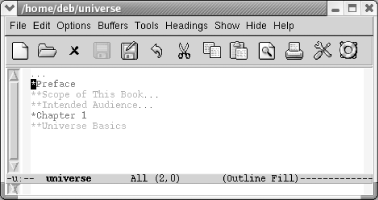
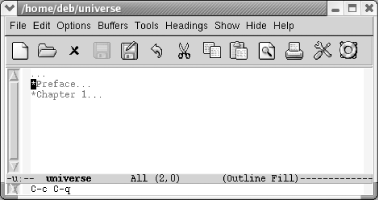

{% include JB/setup %}
{% raw %}
<div>
<div class="book" xml:lang="en"><div class="book"><div class="book"><div class="book"><h1 class="title"><a id="gnu3-CHP-7-SECT-4" class="calibre1"></a>Using Outline Mode</h1></div></div></div><p class="copyright">When you're writing something,
<a id="gnu3-CHP-7-ITERM-2341" class="calibre2"></a>
            <a id="gnu3-CHP-7-ITERM-2342" class="calibre2"></a>
            <a id="gnu3-CHP-7-ITERM-2343" class="calibre2"></a>whether it's a book, a
long paper, or a technical specification, getting a sense of
organization as you go along is frequently difficult. Without a sense
of structure, it is hard to expand an outline smoothly into a longer
paper or to reorganize a paper as you go along. The words get in the
way of your headings, making it hard to see the forest for the trees.</p><p class="copyright">Outline mode provides a built-in solution to this problem. This mode
gives you the ability to hide or display text selectively, based on
its relationship to the structure of your document. For example, you
can hide all of your document's text except for its
headings, thereby giving you a feel for the
document's shape. When you're
looking at the headings, you can focus on structure without being
concerned about individual paragraphs. When you've
solved your structural problems, you can make the text reappear.</p><p class="copyright">Outline mode is more useful for documents with several levels of
headings (or for long programs) than for plain outlines containing
very little text. The longer a document is, the harder it is to get a
quick feel for the overall structure; it is in such a situation that
outline mode's ability to hide and show portions of
the text comes in handy.</p><p class="copyright">Outline mode requires you to follow some special conventions in your
outline or document. <a class="calibre2" href="ch07s04.html#gnu3-CHP-7-FIG-1" title="Figure 7-1. Traditional Outline versus Outline Mode">Figure 7-1</a> shows an outline in
traditional format and the same outline prepared for outline mode. On
the left, we show a "traditional"
outline; on the right, we show the same outline, after being prepared
for outline mode:</p><div class="figure"><a id="gnu3-CHP-7-FIG-1" class="calibre2"></a><div class="figure-contents"><div class="mediaobject"><a id="I_7_tt213" class="calibre2"></a></div></div><p class="title3"><b class="calibre25">Figure 7-1. Traditional Outline versus Outline Mode</b></p></div><br class="book"/><p class="copyright">Whereas traditional outlines use a hierarchical scheme of Roman
numerals, uppercase letters, numbers, and lowercase letters for
heading levels 1 through 4, outline mode by default expects to see
one asterisk (*) for a first-level heading, two for a second-level
heading, and so on. Lines that don't start with an
*, such as "This book is
all-inclusive," are referred to as
<span><em class="calibre7">body</em></span> lines. Notice that Emacs expects to see the
asterisk in the first column. You can use traditional outline
indentation, provided that the asterisks start in the first
column.<sup class="calibre6">[<a id="gnu3-CHP-7-FNOTE-3" href="#ftn.gnu3-CHP-7-FNOTE-3" class="calibre2">3</a>]</sup>
         </p><p class="copyright">The sample outline has only two body lines. As we developed the book,
though, we'd gradually add more and more body:
"This book is all-inclusive" would
be replaced by a substantial chunk of the preface, and other body
lines later in the outline would turn into the text for <a class="calibre2" href="ch01.html" title="Chapter 1. Emacs Basics">Chapter 1</a>. When used properly, outline mode removes
the distinction between outlining and writing. As your outline grows
and becomes more detailed, it can gradually become your paper.</p><div class="book" xml:lang="en"><div class="book"><div class="book"><div class="book"><h2 class="title1"><a id="gnu3-CHP-7-SECT-4.1" class="calibre1"></a>Entering Outline Mode</h2></div></div></div><p class="copyright">To start outline <a id="gnu3-CHP-7-ITERM-2344" class="calibre2"></a>
               <a id="gnu3-CHP-7-ITERM-2345" class="calibre2"></a>mode,
type <span><strong class="calibre5">M-x</strong></span> 
               <span><strong class="calibre5">outline-mode</strong></span> 
               <span><strong class="calibre5">Enter</strong></span>. <code class="calibre21">Outline</code> appears on
the mode line. (Outline mode is also available as a minor mode;
we'll discuss that later in this section.)</p><p class="copyright">After you are in outline mode, you can use special commands to move
quickly from one part of the outline to another. <span><strong class="calibre5">C-c</strong></span> 
               <span><strong class="calibre5">C-n</strong></span> moves
to the next heading or subheading; <span><strong class="calibre5">C-c</strong></span> 
               <span><strong class="calibre5">C-p</strong></span> moves
to the previous one. <span><strong class="calibre5">C-c</strong></span> 
               <span><strong class="calibre5">C-f</strong></span> moves to the next heading of the same
level, so you can use this command to move from one first-level
heading to another throughout the outline, or from one second-level
heading to another within a given entry. <span><strong class="calibre5">C-c</strong></span> 
               <span><strong class="calibre5">C-b</strong></span> moves
backward to the previous heading of the same level. If you want to
move from a second-level heading to its first-level heading, up a
level in the outline structure, you type <span><strong class="calibre5">C-c</strong></span> 
               <span><strong class="calibre5">C-u</strong></span>. (If
you are on a first-level heading already, <span><strong class="calibre5">C-c</strong></span> 
               <span><strong class="calibre5">C-u</strong></span> beeps
because it can't move to a higher level.) <a class="calibre2" href="ch07s04.html#gnu3-CHP-7-FIG-2" title="Figure 7-2. Moving around in outline mode">Figure 7-2</a> illustrates how these cursor commands would
work on our sample outline.</p><div class="figure"><a id="gnu3-CHP-7-FIG-2" class="calibre2"></a><div class="figure-contents"><div class="mediaobject"><a id="I_7_tt214" class="calibre2"></a></div></div><p class="title3"><b class="calibre25">Figure 7-2. Moving around in outline mode</b></p></div><br class="book"/><p class="copyright">These commands make it easy to solve a lot of organizational
problems. If you often think, "I know
I'm writing about widgets, but I
can't remember the bigger point I'm
trying to make," type <span><strong class="calibre5">C-c</strong></span> 
               <span><strong class="calibre5">C-u</strong></span> to
get to the next higher level of the outline. If you want to figure
out how widgets relate to the other topics within the section, use
<span><strong class="calibre5">C-c</strong></span> 
               <span><strong class="calibre5">C-b</strong></span> and <span><strong class="calibre5">C-c</strong></span>
               <span><strong class="calibre5">C-f</strong></span> to move backward and forward to
your other headings.</p></div><div class="book" xml:lang="en"><div class="book"><div class="book"><div class="book"><h2 class="title1"><a id="gnu3-CHP-7-SECT-4.2" class="calibre1"></a>Hiding and Showing Text</h2></div></div></div><p class="copyright">The most important feature of outline
<a id="gnu3-CHP-7-ITERM-2346" class="calibre2"></a>
               <a id="gnu3-CHP-7-ITERM-2347" class="calibre2"></a>mode
is the ability to selectively hide or show different portions of your
text. The ability to see a skeletal view of a long document with
outline mode is its best feature; it's much easier
to evaluate the structure of a document when you can hide everything
but the headings and see whether it is coherent or in need of some
reorganization.</p><p class="copyright">Although it sounds like something out of a detective novel, the
<span><strong class="calibre5">hide-body</strong></span> command, <span><strong class="calibre5">C-c</strong></span> 
               <span><strong class="calibre5">C-t</strong></span>,
hides all the body (or text) lines but leaves all the headings (lines
that begin with an asterisk) visible. Wherever Emacs hides text, it
places an ellipsis (...) on the corresponding heading line. The
ellipsis tells you that some hidden text is present. The buffer
itself is <span><em class="calibre7">not</em></span> modified; you'll
notice, if you watch the left side of the mode line, that the
asterisks that indicate a modified buffer don't
appear. If you save a file and exit while some text is hidden, Emacs
saves the hidden text along with what you see displayed; hiding text
in no way implies losing text. The next time you read the file, Emacs
shows all text that was hidden.</p><p class="copyright">Using the <span><strong class="calibre5">hide-body</strong></span> command is a
good way to get a feel for the structure of a long document. You can
then type <span><strong class="calibre5">C-c</strong></span> 
               <span><strong class="calibre5">C-t</strong></span> and see only the headings without the
text. For example, let's start with the simple
outline we gave above and hide the body.</p><div class="book"><a id="ch07-30-fm2xml" class="calibre2"></a><table class="calibre8"><colgroup class="calibre9"><col class="calibre10"/></colgroup><tbody class="calibre15"><tr class="calibre12"><td class="calibre17">
                           <p class="copyright">Type: <span><strong class="calibre5">C-c C-t</strong></span>
                           </p>
                        </td></tr><tr class="calibre12"><td class="calibre17">
                           <p class="copyright">
                              </p><div class="book"><div class="mediaobject"><a id="I_7_tt215" class="calibre2"></a></div></div><p class="copyright">
                           </p>
                        </td></tr><tr class="calibre12"><td class="calibre19">
                           <p class="copyright">The body is hidden; ellipses show us where body lines are.</p>
                        </td></tr></tbody></table></div><p class="copyright">To show all the hidden text in a file, whether headings or body, type
<span><strong class="calibre5">C-c</strong></span> 
               <span><strong class="calibre5">C-a</strong></span> (for <span><strong class="calibre5">show-all</strong></span>). These commands, <span><strong class="calibre5">hide-body</strong></span> and <span><strong class="calibre5">show-all</strong></span>, work on the outline as a whole. A
command similar to <span><strong class="calibre5">hide-body</strong></span> is
<span><strong class="calibre5">hide-sublevels</strong></span>, <span><strong class="calibre5">C-c C-q</strong></span>. This command shows only first-level
headers, giving you a feel for the major sections in the document
you're working on.</p><div class="book"><a id="ch07-31-fm2xml" class="calibre2"></a><table class="calibre8"><colgroup class="calibre9"><col class="calibre10"/></colgroup><tbody class="calibre15"><tr class="calibre12"><td class="calibre17">
                           <p class="copyright">Type: <span><strong class="calibre5">C-c C-q</strong></span>
                           </p>
                        </td></tr><tr class="calibre12"><td class="calibre17">
                           <p class="copyright">
                              </p><div class="book"><div class="mediaobject"><a id="I_7_tt216" class="calibre2"></a></div></div><p class="copyright">
                           </p>
                        </td></tr><tr class="calibre12"><td class="calibre19">
                           <p class="copyright">Only first-level headers appear.</p>
                        </td></tr></tbody></table></div></div><div class="book" xml:lang="en"><div class="book"><div class="book"><div class="book"><h2 class="title1"><a id="gnu3-CHP-7-SECT-4.3" class="calibre1"></a>Editing While Text Is Hidden</h2></div></div></div><p class="copyright">Now that you know how to hide <a id="gnu3-CHP-7-ITERM-2348" class="calibre2"></a>
               <a id="gnu3-CHP-7-ITERM-2349" class="calibre2"></a>
               <a id="gnu3-CHP-7-ITERM-2350" class="calibre2"></a>
               <a id="gnu3-CHP-7-ITERM-2351" class="calibre2"></a>and show text, let's
discuss some of the properties of hidden text. Editing a document
while some of it is hidden is often
useful—it's a great way to make major changes
in document structure—but there are some dangers that you
should be aware of. Let's say
you've hidden all text with outline mode and only
the headings are showing, giving you a true
"outline" of your document. If you
move a heading that has hidden text and headings associated with it,
everything that is hidden moves when you move the visible text.
Later, when you "show" all of the
document, the hidden text appears in its new
location—underneath the heading that you moved. Similarly, if
you delete a heading, you delete all hidden text as well.</p><p class="copyright">This feature makes moving blocks of text easy. However, there are
some things to watch out for. If you delete the ellipsis following an
entry, Emacs deletes the hidden information as well. To its credit,
Emacs tries to keep you from doing this; it does not allow you to
delete the ellipsis using the <span><strong class="calibre5">Del</strong></span>
key or using normal cursor commands like <span><strong class="calibre5">C-b</strong></span> to move the cursor onto it. However, if
you're persistent you can delete the ellipses (and
the text it represents) using, for example, <span><strong class="calibre5">C-k</strong></span>. If you do so, Emacs deletes the hidden
text. Typing <span><strong class="calibre5">C-y</strong></span> yanks the hidden
text that you killed when you deleted the ellipsis; the <span><strong class="calibre5">undo</strong></span> command, <span><strong class="calibre5">C-_</strong></span>, restores the ellipsis. Our advice is to
display text before deleting it so you can see what
you're doing. On the other hand, when you are moving
sections of an outline around, it is helpful to do sowhile text is
hidden so you can keep the structure in mind.</p><p class="copyright">Be careful when moving hidden text to a buffer
that's not in outline mode. Let's
say that your outline ends with a heading followed by an ellipsis.
When marking that section to move to another buffer, make sure the
region includes the newline following the ellipsis (for example, move
to the beginning of the next line). If you simply place the cursor
following the ellipsis, Emacs copies only the header, not the hidden
text. We're not sure why. Moving past the newline
copies the body as well as the heading correctly, and pasting it into
a buffer in text mode shows all the hidden text.</p></div><div class="book" xml:lang="en"><div class="book"><div class="book"><div class="book"><h2 class="title1"><a id="gnu3-CHP-7-SECT-4.4" class="calibre1"></a>Marking Sections of the Outline</h2></div></div></div><p class="copyright">When you're moving <a id="gnu3-CHP-7-ITERM-2352" class="calibre2"></a>
               <a id="gnu3-CHP-7-ITERM-2353" class="calibre2"></a>
               <a id="gnu3-CHP-7-ITERM-2354" class="calibre2"></a>text around, it's
convenient to be able to mark a section of the outline and then move
it or promote or demote it a level, as we'll discuss
next. To mark a section of the outline (the current heading and its
children), type <span><strong class="calibre5">C-c @</strong></span> (for <span><strong class="calibre5">outline-mark-subtree</strong></span>). You can then cut or
paste the section you've marked. You might want to
type <span><strong class="calibre5">C-x C-x</strong></span> to verify that the
region is marked correctly.</p></div><div class="book" xml:lang="en"><div class="book"><div class="book"><div class="book"><h2 class="title1"><a id="gnu3-CHP-7-SECT-4.5" class="calibre1"></a>Promoting and Demoting Sections</h2></div></div></div><p class="copyright">Often as you're writing, <a id="gnu3-CHP-7-ITERM-2355" class="calibre2"></a>
               <a id="gnu3-CHP-7-ITERM-2356" class="calibre2"></a>you
find that a certain heading should really be promoted or demoted a
level. To promote a heading, type <span><strong class="calibre5">C-c
C-^</strong></span>. To demote it a level, <span><strong class="calibre5">C-c
C-v</strong></span>. (Note the clever attempt to make the key bindings
indicate that you're moving headings up or down a
level using <code class="calibre21">^</code> and <code class="calibre21">v</code>.) This
automatically changes the markings for the heading in question. In
other words, promoting a second-level heading removes an asterisk,
making it a first-level heading. You'll find the
commands to move to the next and previous headings, <span><strong class="calibre5">C-c C-n</strong></span> and <span><strong class="calibre5">C-c
C-p</strong></span>, helpful when you are promoting and demoting sections.</p><p class="copyright">But what if you want to demote not just a heading but a subtree? Or
even the entire outline? At the moment, you'd have
to write a Lisp function to do that (or use someone
else's). Several functions like this have been
written by gurus and posted online, but none are part of Emacs at
this writing. We hope this function is incorporated soon.</p></div><div class="book" xml:lang="en"><div class="book"><div class="book"><div class="book"><h2 class="title1"><a id="gnu3-CHP-7-SECT-4.6" class="calibre1"></a>Using Outline Minor Mode</h2></div></div></div><p class="copyright">Outline mode is also <a id="gnu3-CHP-7-ITERM-2357" class="calibre2"></a>
               <a id="gnu3-CHP-7-ITERM-2358" class="calibre2"></a>available as a minor mode so that you
can use it subordinately to your favorite major mode. To start
outline mode as a minor mode, type <span><strong class="calibre5">M-x</strong></span> 
               <span><strong class="calibre5">outline-minor-mode</strong></span>; <code class="calibre21">Outl</code>
appears on the mode line. In some ways, this mode is less convenient;
rather than the simple <span><strong class="calibre5">C-c</strong></span> prefix
you use for most outline mode commands, in outline minor mode, you
must preface all commands with <span><strong class="calibre5">C-c</strong></span>
               <span><strong class="calibre5">@</strong></span> instead, to avoid interfering with
the usual <span><strong class="calibre5">C-c</strong></span> commands of the major
mode. So, if you want to move down to the next heading (the <span><strong class="calibre5">C-c</strong></span> 
               <span><strong class="calibre5">C-n</strong></span>
command in outline mode), you would type <span><strong class="calibre5">C-c</strong></span> 
               <span><strong class="calibre5">@</strong></span>
               <span><strong class="calibre5">C-n</strong></span> instead.</p><p class="copyright">Please note that mixing outline major mode and outline minor mode is
not only redundant but can be dangerous. Turning on the minor mode
while the major mode is on can confuse Emacs. Exit outline mode, then
enter outline minor mode if you wish.</p><p class="copyright">
               <a class="calibre2" href="ch07s04.html#gnu3-CHP-7-TABLE-4" title="Table 7-4. Outline mode commands">Table 7-4</a> summarizes outline mode commands. In the
next section, we discuss another specialized editing method: editing
with rectangles.</p><div class="book"><a id="gnu3-CHP-7-TABLE-4" class="calibre2"></a><p class="title2"><b class="calibre25">Table 7-4. Outline mode commands</b></p><div class="table-contents"><a id="gnu3-CHP-7-ITERM-2359" class="calibre2"></a><a id="gnu3-CHP-7-ITERM-2360" class="calibre2"></a><table summary="Outline mode commands" class="calibre8"><colgroup class="calibre9"><col class="calibre10"/><col class="calibre10"/><col class="calibre10"/></colgroup><thead class="calibre11"><tr class="calibre12"><th class="calibre26">
                           <p class="copyright">Keystrokes</p>
                        </th><th class="calibre26">
                           <p class="copyright">Command name</p>
                        </th><th class="calibre27">
                           <p class="copyright">Action</p>
                        </th></tr></thead><tbody class="calibre15"><tr class="calibre12"><td class="calibre28">
                           <p class="copyright">(none)</p>
                        </td><td class="calibre28">
                           <p class="copyright">
                              <span><strong class="calibre5">outline-mode</strong></span>
                           </p>
                        </td><td class="calibre29">
                           <p class="copyright">Toggle outline mode.</p>
                        </td></tr><tr class="calibre12"><td class="calibre28">
                           <p class="copyright">
                              <span><strong class="calibre5">C-c C-n</strong></span>
                              <span><em class="calibre7">Headings</em></span>
                              <span>→</span> 
                              <span><em class="calibre7">Next</em></span>
                           </p>
                        </td><td class="calibre28">
                           <p class="copyright">
                              <span><strong class="calibre5">outline-next-visible-heading</strong></span>
                           </p>
                        </td><td class="calibre29">
                           <p class="copyright">Move to the next heading.</p>
                        </td></tr><tr class="calibre12"><td class="calibre28">
                           <p class="copyright">
                              <span><strong class="calibre5">C-c C-p</strong></span>
                              <span><em class="calibre7">Headings</em></span>
                              <span>→</span> 
                              <span><em class="calibre7">Previous</em></span>
                           </p>
                        </td><td class="calibre28">
                           <p class="copyright">
                              <span><strong class="calibre5">outline-previous-visible-heading</strong></span>
                           </p>
                        </td><td class="calibre29">
                           <p class="copyright">Move to the previous heading.</p>
                        </td></tr><tr class="calibre12"><td class="calibre28">
                           <p class="copyright">
                              <span><strong class="calibre5">C-c C-f</strong></span>
                              <span><em class="calibre7">Headings</em></span>
                              <span>→</span> 
                              <span><em class="calibre7">Next Same Level</em></span>
                           </p>
                        </td><td class="calibre28">
                           <p class="copyright">
                              <span><strong class="calibre5">outline-forward-same-level</strong></span>
                           </p>
                        </td><td class="calibre29">
                           <p class="copyright">Move to the next heading of the same level.</p>
                        </td></tr><tr class="calibre12"><td class="calibre28">
                           <p class="copyright">
                              <span><strong class="calibre5">C-c C-b</strong></span> 
                              <span><em class="calibre7">Headings</em></span>
                              <span>→</span> 
                              <span><em class="calibre7">Previous Same Level</em></span>
                           </p>
                        </td><td class="calibre28">
                           <p class="copyright">
                              <span><strong class="calibre5">outline-backward-same-level</strong></span>
                           </p>
                        </td><td class="calibre29">
                           <p class="copyright">Move to the previous heading of same level.</p>
                        </td></tr><tr class="calibre12"><td class="calibre28">
                           <p class="copyright">
                              <span><strong class="calibre5">C-c C-u</strong></span>
                              <span><em class="calibre7">Headings</em></span>
                              <span>→</span> 
                              <span><em class="calibre7">Up</em></span>
                           </p>
                        </td><td class="calibre28">
                           <p class="copyright">
                              <span><strong class="calibre5">outline-up-heading</strong></span>
                           </p>
                        </td><td class="calibre29">
                           <p class="copyright">Move up one heading level.</p>
                        </td></tr><tr class="calibre12"><td class="calibre28">
                           <p class="copyright">
                              <span><strong class="calibre5">C-c C-t</strong></span> 
                              <span><em class="calibre7">Hide</em></span>
                              <span>→</span> 
                              <span><em class="calibre7">Hide Body</em></span>
                           </p>
                        </td><td class="calibre28">
                           <p class="copyright">
                              <span><strong class="calibre5">hide-body</strong></span>
                           </p>
                        </td><td class="calibre29">
                           <p class="copyright">Hide all body lines.</p>
                        </td></tr><tr class="calibre12"><td class="calibre28">
                           <p class="copyright">
                              <span><strong class="calibre5">C-c C-a</strong></span>
                              <span><em class="calibre7">Show</em></span>
                              <span>→</span> 
                              <span><em class="calibre7">Show All</em></span>
                           </p>
                        </td><td class="calibre28">
                           <p class="copyright">
                              <span><strong class="calibre5">show-all</strong></span>
                           </p>
                        </td><td class="calibre29">
                           <p class="copyright">Show everything that's hidden.</p>
                        </td></tr><tr class="calibre12"><td class="calibre28">
                           <p class="copyright">
                              <span><strong class="calibre5">C-c C-q</strong></span> 
                              <span><em class="calibre7">Hide</em></span>
                              <span>→</span> 
                              <span><em class="calibre7">Hide Sublevels</em></span>
                           </p>
                        </td><td class="calibre28">
                           <p class="copyright">
                              <span><strong class="calibre5">hide-sublevels</strong></span>
                           </p>
                        </td><td class="calibre29">
                           <p class="copyright">Display first level headers only.</p>
                        </td></tr><tr class="calibre12"><td class="calibre28">
                           <p class="copyright">
                              <span><strong class="calibre5">C-c C-o</strong></span> 
                              <span><em class="calibre7">Hide</em></span>
                              <span>→</span> 
                              <span><em class="calibre7">Hide Other</em></span>
                           </p>
                        </td><td class="calibre28">
                           <p class="copyright">
                              <span><strong class="calibre5">hide-other</strong></span>
                           </p>
                        </td><td class="calibre29">
                           <p class="copyright">Hide all text and headings outside the current subtree. First level
headers show.</p>
                        </td></tr><tr class="calibre12"><td class="calibre28">
                           <p class="copyright">
                              <span><strong class="calibre5">C-c @</strong></span>
                           </p>
                        </td><td class="calibre28">
                           <p class="copyright">
                              <span><strong class="calibre5">outline-mark-subtree</strong></span>
                           </p>
                        </td><td class="calibre29">
                           <p class="copyright">Mark the current header and all sublevels.</p>
                        </td></tr><tr class="calibre12"><td class="calibre28">
                           <p class="copyright">
                              <span><strong class="calibre5">C-c C-^</strong></span>
                           </p>
                        </td><td class="calibre28">
                           <p class="copyright">
                              <span><strong class="calibre5">outline-promote</strong></span>
                           </p>
                        </td><td class="calibre29">
                           <p class="copyright">Promote the current heading one level.</p>
                        </td></tr><tr class="calibre12"><td class="calibre28">
                           <p class="copyright">
                              <span><strong class="calibre5">C-c C-v</strong></span>
                           </p>
                        </td><td class="calibre28">
                           <p class="copyright">
                              <span><strong class="calibre5">outline-demote</strong></span>
                           </p>
                        </td><td class="calibre29">
                           <p class="copyright">Demote the current heading one level.</p>
                        </td></tr><tr class="calibre12"><td class="calibre28">
                           <p class="copyright">
                              <span><strong class="calibre5">C-c C-d</strong></span> 
                              <span><em class="calibre7">Hide</em></span>
                              <span>→</span> 
                              <span><em class="calibre7">Hide Subtree</em></span>
                           </p>
                        </td><td class="calibre28">
                           <p class="copyright">
                              <span><strong class="calibre5">hide-subtree</strong></span>
                           </p>
                        </td><td class="calibre29">
                           <p class="copyright">Hide subheads and body associated with a given heading.</p>
                        </td></tr><tr class="calibre12"><td class="calibre28">
                           <p class="copyright">
                              <span><strong class="calibre5">C-c C-c</strong></span> 
                              <span><em class="calibre7">Hide</em></span>
                              <span>→</span> 
                              <span><em class="calibre7">Hide Entry</em></span>
                           </p>
                        </td><td class="calibre28">
                           <p class="copyright">
                              <span><strong class="calibre5">hide-entry</strong></span>
                           </p>
                        </td><td class="calibre29">
                           <p class="copyright">Hide the body associated with a particular heading (not subheads and
their bodies).</p>
                        </td></tr><tr class="calibre12"><td class="calibre28">
                           <p class="copyright">
                              <span><strong class="calibre5">C-c C-l</strong></span>
                              <span><em class="calibre7">Hide</em></span>
                              <span>→</span> 
                              <span><em class="calibre7">Hide Leaves</em></span>
                           </p>
                        </td><td class="calibre28">
                           <p class="copyright">
                              <span><strong class="calibre5">hide-leaves</strong></span>
                           </p>
                        </td><td class="calibre29">
                           <p class="copyright">Hide the body of a particular heading and the bodies of all its
subheads.</p>
                        </td></tr><tr class="calibre12"><td class="calibre28">
                           <p class="copyright">
                              <span><strong class="calibre5">C-c C-s</strong></span> 
                              <span><em class="calibre7">Show</em></span>
                              <span>→</span> 
                              <span><em class="calibre7">Show Subtree</em></span>
                           </p>
                        </td><td class="calibre28">
                           <p class="copyright">
                              <span><strong class="calibre5">show-subtree</strong></span>
                           </p>
                        </td><td class="calibre29">
                           <p class="copyright">Show the subheads and text associated with a given heading.</p>
                        </td></tr><tr class="calibre12"><td class="calibre28">
                           <p class="copyright">
                              <span><strong class="calibre5">C-c C-e</strong></span> 
                              <span><em class="calibre7">Show</em></span>
                              <span>→</span> 
                              <span><em class="calibre7">Show Entry</em></span>
                           </p>
                        </td><td class="calibre28">
                           <p class="copyright">
                              <span><strong class="calibre5">show-entry</strong></span>
                           </p>
                        </td><td class="calibre29">
                           <p class="copyright">Show the body associated with a particular heading (not subheads and
their bodies).</p>
                        </td></tr><tr class="calibre12"><td class="calibre28">
                           <p class="copyright">
                              <span><strong class="calibre5">C-c C-k</strong></span> 
                              <span><em class="calibre7">Show</em></span>
                              <span>→</span> 
                              <span><em class="calibre7">Show Branches</em></span>
                           </p>
                        </td><td class="calibre28">
                           <p class="copyright">
                              <span><strong class="calibre5">show-branches</strong></span>
                           </p>
                        </td><td class="calibre29">
                           <p class="copyright">Show the body of a heading and bodies of all its subheads.</p>
                        </td></tr><tr class="calibre12"><td class="calibre30">
                           <p class="copyright">
                              <span><strong class="calibre5">C-c Tab</strong></span> 
                              <span><em class="calibre7">Show</em></span>
                              <span>→</span> 
                              <span><em class="calibre7">Show Children</em></span>
                           </p>
                        </td><td class="calibre30">
                           <p class="copyright">
                              <span><strong class="calibre5">show-children</strong></span>
                           </p>
                        </td><td class="calibre31">
                           <p class="copyright">Show the next level of subheads associated with a particular heading
(none of body text).</p>
                        </td></tr></tbody></table></div></div><br class="book"/></div><div class="book"><br class="book"/><hr class="calibre4"/><div class="book"><p class="copyright"><sup class="calibre6">[<a id="ftn.gnu3-CHP-7-FNOTE-3" href="#gnu3-CHP-7-FNOTE-3" class="calibre2">3</a>] </sup>Of course, after the document is complete,
you'll want to remove the asterisks. You can use a
query-replace to change the asterisk-style headers into headers that
are appropriate for your preferred formatting style. Find the
lowest-level heading and do its replacement first. If you have
third-level headings, replace all occurrences of *** with the mark-up
for a third-level heading, then move on to second-level headings, and
finally first-level headings. Be careful on first-level headings,
though; there may well be asterisks in the file that are unrelated to
headings; preface the asterisk with <span><strong class="calibre5">C-q
C-j</strong></span> to ensure that you get an asterisk that starts on a
new line. Another approach is to use Eric Pement's
awk scripts. The script at <a class="calibre2" href="http://www.student.northpark.edu/pemente/awk/outline_classic11.awk.txt">http://www.student.northpark.edu/pemente/awk/outline_classic11.awk.txt</a>
converts an outline mode outline to a classic outline while the
script at <a class="calibre2" href="http://www.student.northpark.edu/pemente/awk/outline_numbered11.awk.txt">http://www.student.northpark.edu/pemente/awk/outline_numbered11.awk.txt</a>
converts to a numbered outline.</p></div></div></div></div>

{% endraw %}

